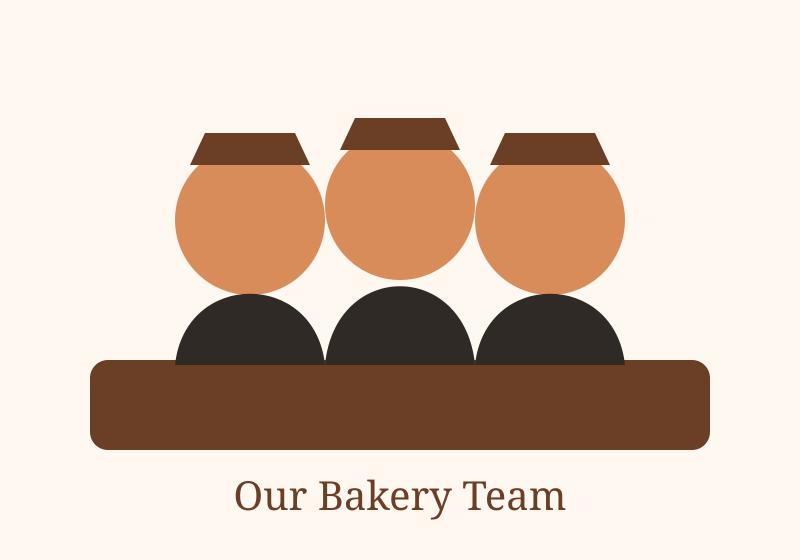

Our story
North Star Bakery began with a focus on small-batch baking, friendly service, and products that work for both everyday visits and special occasions.
North Star Bakery
A neighborhood bakery
Our goal is simple: make dependable, handmade baked goods that feel at home in the neighborhood.

North Star Bakery began with a focus on small-batch baking, friendly service, and products that work for both everyday visits and special occasions.
We prioritize dependable ingredients, seasonal opportunities, careful preparation, and practical choices that reduce unnecessary waste.
Our bakers and counter staff prepare each day's menu, help customers choose products, and coordinate pre-orders for celebrations and community events.
The short video gives visitors a look at the careful, handmade process behind our products.